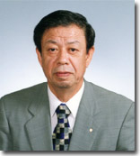

金子公認会計士税理士事務所 所長
昭和不動産鑑定株式会社 代表取締役
金子 和照税理士・不動産鑑定士
当事務所は、金子公認会計士税理士事務所〔現在の呼称〕として５９年を経過し、昭和不動産鑑定株式会社として４９年を経過しました。不撓不屈を経営理念としてクライアントのニーズに合わせた多様なサービスを展開してまいりました。
資格者人員と事業規模
当事務所の最大の特徴は、公認会計士２名、税理士４名、不動産鑑定士３名、社会保険労務士１名、行政書士１名、メンタルトレーナー１名、下手なゴルファー数名（一部重複取得者あり）がいる専門家集団であることです。２０名程度の事務所ですが職員は各分野に精通した誇り高きエキスパート達です。
世界的グローバル化がもたらす専門家集団のあり方の変化・クライアントとのミスマッチ
世界的なグローバル化は私達の専門家集団（公認会計士、税理士、不動産鑑定士など）のあり方を完全に変えてしまいました。かつてはただ単に公認会計士は企業監査をし、税理士は企業の決算書、税務申告書を作成し、不動産鑑定士は土地、建物などの評価をすればそれで充分でした。もちろん、その業務そのものは必要不可欠であり当然なことです。しかしながら、企業はこれのみでは納得しなくなりました。つまり、これでは多様化する企業のニーズに応えられなくなってしまい、いわゆるミスマッチが始まったのです。
クライアントの経営に参画
こうしたミスマッチを防ぐためにも、日本企業の大半を占める中小企業のもっと深部へ専門家集団として入り込むべきです。例えば、社会的な外部要因で企業の営業利益がマイナスとなり、内部留保が底をついたのでは、経営者は為す術もなく気力を失い事業閉鎖を余儀なくされます。そこで私達専門家がクライアントの経営に参画しタイムリーに適切な提案をすることにより、こうした事態を回避できます。
専門家集団の経営参画によるクライアントの有利性
当事務所はこの時代の流れをいち早く察知し、具体的には理論から実践へ移行し軌道に乗せることに成功しました。つまり、理論を一方的に伝えるだけでなく、経営者と同一目線で一緒に経営改革をしようとする姿勢です。バブル崩壊、リーマンショック、新型コロナ感染症とほぼ１０年に１回到来しているこの不況からの脱出には一専門職の知識ではとうてい叶うものではありません。内容豊富な専門家集団であり優れたエキスパートを擁する当事務所であればこそ可能となります。
資産税に関する税務当局に対する有利性
振り返って見ると、当事務所のクライアントには多種多様の不動産所有者が意外と多いのです。何故だろうと考えてみますと、当然ながら当事務所は資産税に強いのです。具体的には税理士２名から４名に増え、不動産鑑定士２名から３名に増え贈与税や相続税の基礎となる路線価などの価格より遙かに精度が優れる価格を税務当局に主張できるからです。
医療法人、学校法人などへの精通
当事務所は医療法人化を積極的に進め、節税効果を実現するなど、会社法はもちろん医療法、介護保険法、社会福祉法等の多様な法人に係わる法令や会計制度に精通しているため、会社法人のみならず医療法人、社会福祉法人、学校法人、ＮＰＯ法人等の多様な法人の会計を得意としています。更に、公認会計士が２名在籍することから、これら法人の内部統制の構築支援も同時に行うことができます。
経営参画に続く心のケアーの重要性
当事務所のクライアントに対する経営改革の実績、またはその事例は既に数え切れないほどたくさんあります。同一パターンの事例は１つもありません。これは稀に見ぬ専門家集団とエキスパートとの融合が功を奏したものと言えます。しかしながら、よく病は気からと言われます。あまりにも早い社会経済の変遷は経営者の心を蝕んでいます。財務諸表（貸借対照表、損益計算書など）を見ますと、まだそんなに悪くないにもかかわらず経営者はパニック状態となるケースが多いのです。そんなとき、理論を説き、同じ考えで経営を実践してもそれは十分ではありません。この激動時代の経営者は一面アスリートとも言えます。そのアスリート達にはメンタルトレーニングが不可欠です。幸い当事務所にはメンタルトレーナーが１名います。つまり、経営者と同一目線で経営を考えるとき心身共に同一性が必要です。
海外進出への支援
経済はグローバル化の一途をたどっています。大・中小企業を問わずマーケットの拡大や低廉な人件費を求めて東南アジアなどの発展途上国へ進出しています。当事務所はこうした国への視察を繰り返し、社会の仕組み、会計の基準、税務のあり方、不動産情報を習得しています。クライアントのニーズに応じた効率的な進出を支援しています。
不動産の実需（収益性）を基礎とした企業評価、出店適地、時価評価
当事務所は不動産とその不動産が将来生み出すであろう純収益との関係を熟知し、不動産鑑定士と公認会計士との協働により企業資産の価値を導き出す企業評価を得意としています。同じく収益構造を踏まえ、出店適地を判定し情報提供できます。また、同じくデューデリジェンスを背景としたバランスシート上の不動産の時価を効率よく評価できます。
また、ゴルフと人生、ゴルフと経営の関係は極めて密着な関係であると言われています。それを理解していただくため「有休閑話」と称して時折、専門文章との間に挿入させ、可能な限り楽しいホームページにしたいと存じます